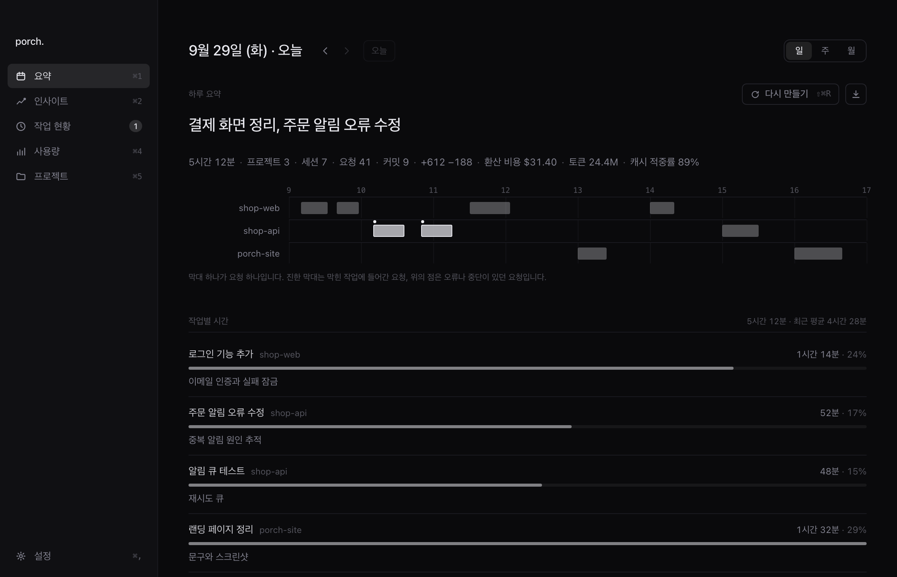
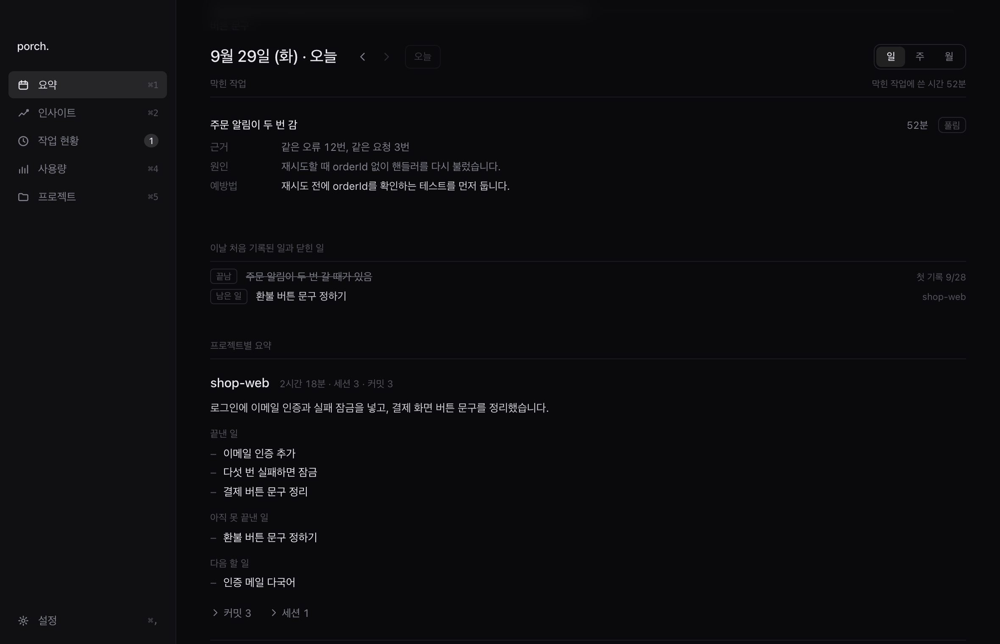
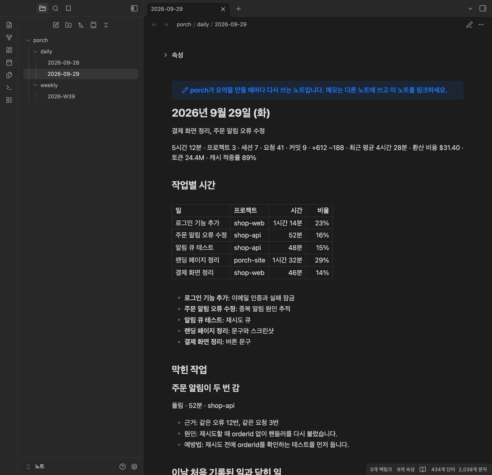
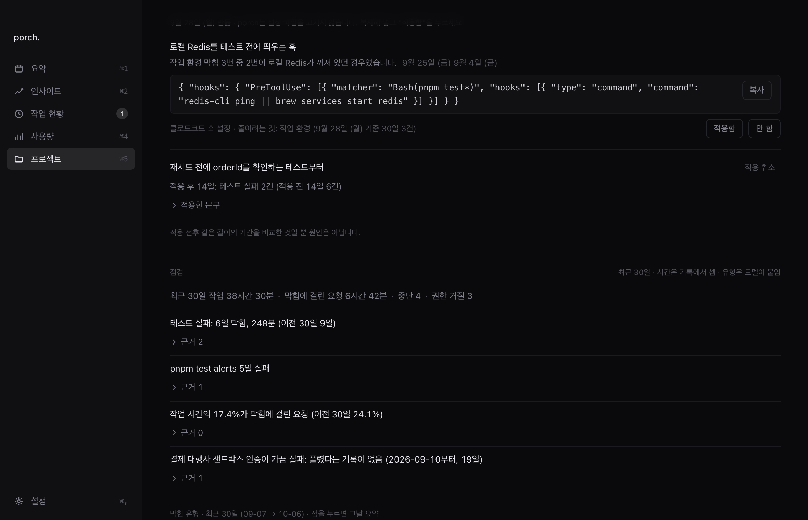
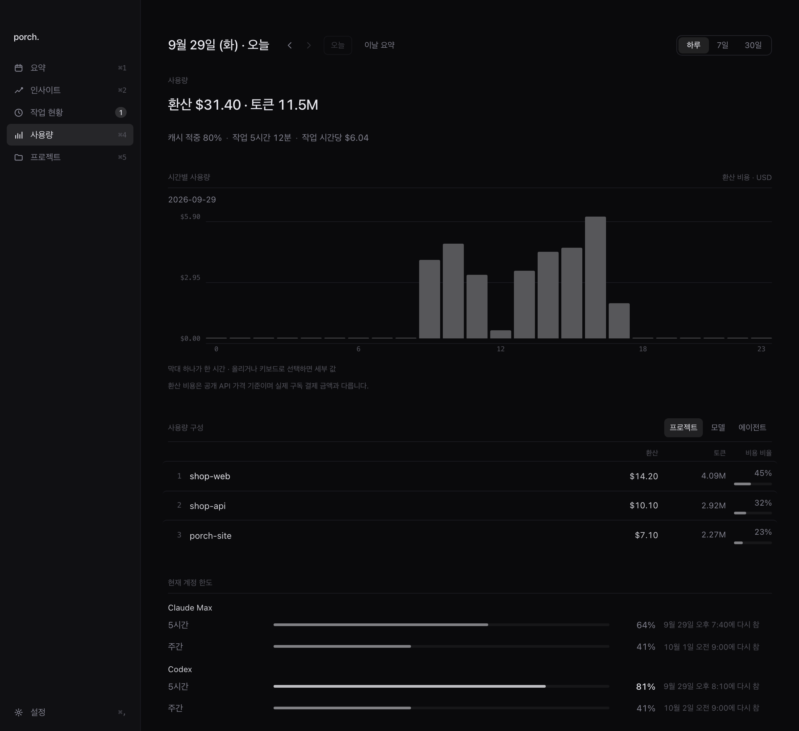

 117:40
117:40~/work/shop-web ❯ claude
zshcodex
~/work/shop-api ❯ codex
TERMINALPROBLEMSOUTPUT
~/work/porch-site ❯ claude
Ghostty
iTerm2
VS Code

요약
오늘 한 일을 AI가 정리합니다.
설정에서 고른 클로드코드나 코덱스가 기록을 요약합니다. 작업별 추정 시간도 함께 보여 줍니다.
막힌 작업
같은 오류나 요청이 반복된 작업을 찾아 줍니다.
오류나 요청이 반복된 횟수와 줄일 방법 하나를 적습니다. 기록으로 원인을 알 수 없으면 알 수 없다고 씁니다.
노트
요약이 옵시디언 노트로 쌓입니다.
옵시디언 볼트나 폴더를 연결하면 일·주·월 요약을 마크다운 노트로 저장합니다. 요약을 다시 만들면 그 노트를 덮어씁니다.
제안
반복되는 문제마다 바꿔 볼 점을 제안합니다.
설정에서 고른 클로드코드나 코덱스가 CLAUDE.md 문구나 훅을 제안합니다. 직접 적용하면 같은 문제가 생긴 횟수를 전후로 비교하되, 원인으로 단정하지 않습니다.
작업 현황
어느 터미널의 세션이든 한 목록에 모입니다.
허락이나 답을 기다리는 세션과 오류로 멈춘 세션이 위에 오고, 메뉴바에 그 수가 뜹니다. 오류로 멈춤은 클로드코드만 표시합니다.
사용량
토큰 사용량과 남은 한도를 한곳에서 봅니다.
실제 결제액과 다른 API 환산 비용과 캐시 적중을 봅니다. 클로드 한도는 Pro·Max에서 설정을 켜야 나오고, 코덱스 한도는 기록에 남은 마지막 값입니다.